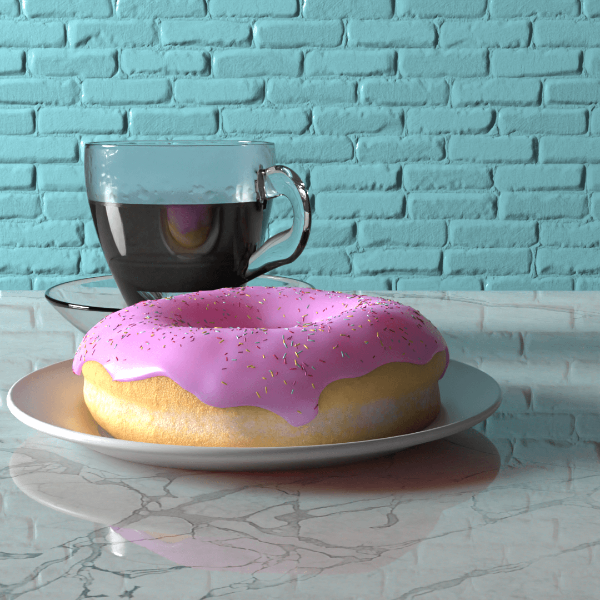
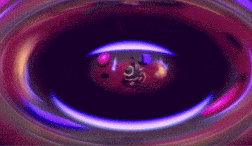
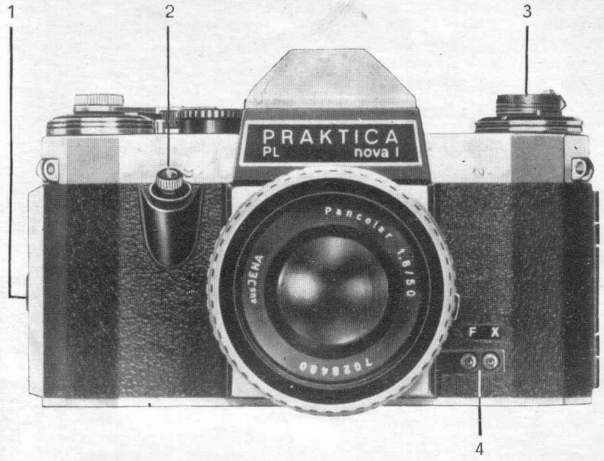

Boy oh boy do I go through hobbies like cops with doughnuts. Had a swing at blender, followed a few tutorials but just lost interest after it took too long to do more ‘complex’ low-poly models.

This was paired up with a brief stint learning Unity.

I chugged through that for a while before my attention span snapped like an overstretched rubberband. Here’s hoping the next hobby,  is going to be a bit better; likely to be a bit longer lasting as there is a $$$ commitment and I get to explore the city à pied.